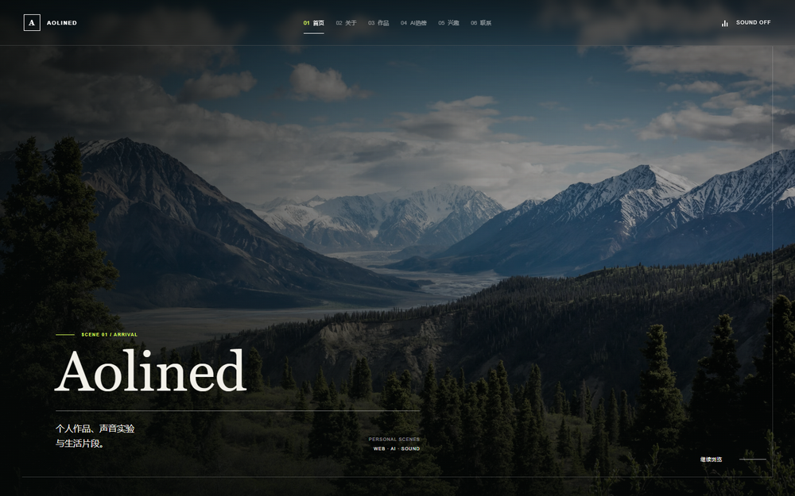
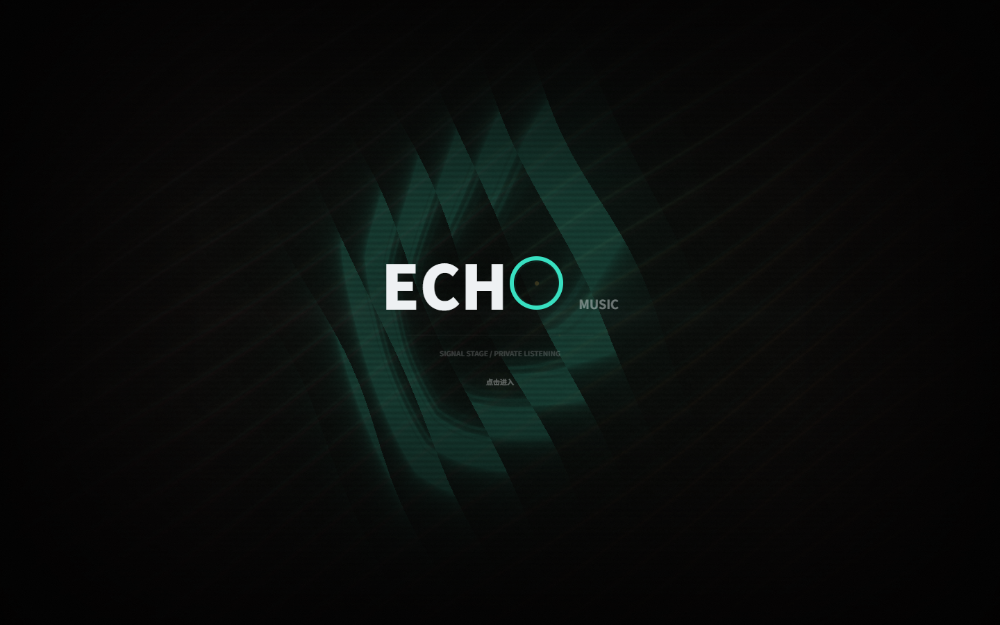
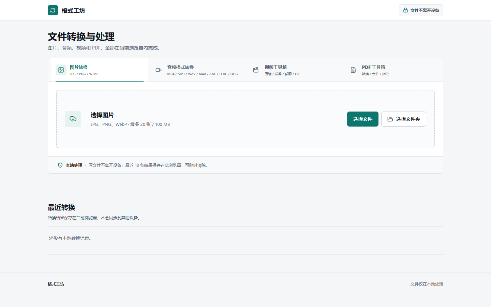
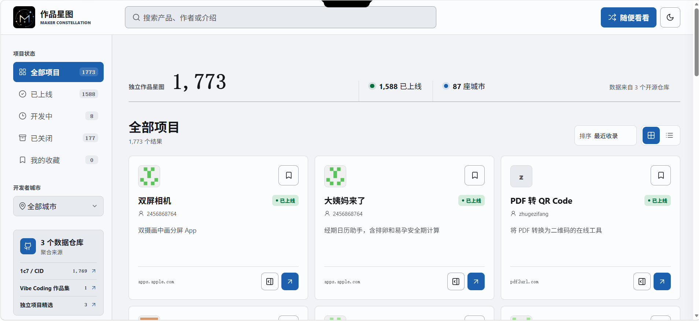

SCENE 01 / ARRIVAL
Aolined
个人作品、声音实验
与生活片段。
PERSONAL SCENESWEB · AI · SOUND
SCENE 02 / ABOUT
我喜欢让想法
慢慢长出形状。
这里不是一份简历，而是一段可以反复进入的个人片场。它收下我正在做的项目、最近留意的光线，以及不想遗忘的瞬间。
- BASED IN
- 自己的节奏里
- FOCUS
- Web / AI / Sound
- STATUS
- Quietly building
最近在做重建这间数字房间正在循环环境电子与深夜电台想学会把复杂的东西做得自然
SELECTED WORKS / ORBITAL INDEX
项目轨道
沿一条轨道，浏览四个已上线项目。
已选择作品：Personal Scenes，1 / 4

02MUSIC APPLICATION
Echo Music
沉浸式音乐播放器，融合天气电台、歌词舞台、粒子视觉和 3D 歌单架。
VERSION 1.1.1 · GPL-3.0 · WEB / WINDOWS
正在检测 Echo Music…

03LOCAL CONVERSION TOOL
格式工坊
在浏览器本地完成图片、音频、视频与 PDF 转换和编辑，文件无需上传。
VERSION 0.2.0 · PWA · LOCAL-FIRST
打开格式工坊
04PROJECT DIRECTORY
作品星图
Maker Constellation · 中国独立开发者作品发现目录
聚合多个 GitHub 来源中的中文独立开发项目，展示产品、开发者、城市、状态、简介和项目地址；支持搜索、状态与城市筛选、排序、收藏、随机发现、详情和原项目访问。
保留收录来源并定时抓取自动更新；不托管项目代码，也不替开发者发布产品。
打开作品星图SCENE 04 / LIVE PULSE
此刻
正在发生
在 AI 讨论、开源项目与公共话题之间切换，观察网络此刻真正关心的事。
SOURCE / HACKER NEWS AI · 自动更新间隔 2 分钟
SCENE 05 / CURRENT SIGNALS
构成日常的
一些信号
不一定有用，但它们持续影响我做东西时的节奏、质感和选择。
声音
环境电子、深夜电台、现场录音、能听见空间感的音乐。
游戏
独立叙事、小型模拟、允许慢慢探索且不急着给答案的世界。
工具
本地优先、自动化、明确的按钮，以及真正减少重复劳动的软件。
物件
旧设备、小灯、纸张、旋钮和那些会留下使用痕迹的东西。
SCENE 06 / STAY IN TOUCH